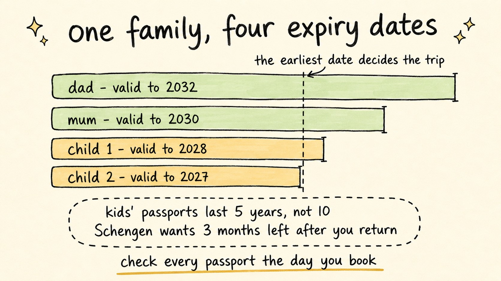

Schengen Passport Rules for Family Trips: What Parents Get Wrong
Travel Document Vault
Key Takeaways
- The real Schengen rule is 3 months of validity beyond the date you leave, plus a passport issued within the last 10 years - it is not the "6-month rule".
- Children's passports expire in 5 years, so a family's passports fall out of sync and the earliest expiry decides the trip.
- Pre-October-2018 UK passports with bonus months can fail the 10-year issuance test even while the booklet still looks valid.
- Airlines check every passport against IATA's Timatic database at check-in - no rounding, no override, and one failed passport grounds the family.
- Audit every passport the day you book, not the week you fly. Five minutes at booking time is the whole fix.
Booking a family trip to Europe usually starts the same way: you check your own passport, see years of validity left, and hit confirm. The catch arrives weeks later, when someone finally opens the drawer and finds that a child's passport - issued on a shorter clock than yours - runs out sooner than anyone thought. Nobody sends parents a warning letter about this. The check-in desk delivers the news instead.
Two rules and one quirk of children's passports explain nearly every family Schengen problem, and all three can be checked in five minutes on the day you book.
The Real Schengen Rule: 3 Months Beyond Departure
The EU's requirement is precise: your passport must be valid for at least 3 months after the date you intend to leave the Schengen area, and it must have been issued within the previous 10 years.
Imagine your family returns from Italy on 20 August. Every passport needs validity to roughly 20 November - that's three months beyond your departure date, not your arrival, and not your booking date. A passport expiring on 10 November fails that test, even though the holiday itself ends weeks earlier.
The issued-within-10-years condition catches UK families in a specific way. Older UK passports could carry extra unused months added from a previous passport, so some booklets show more than 10 years between issue and expiry. For Schengen entry, those extra months do not count: the passport must be under 10 years old on the day you enter, whatever the expiry date printed inside.
Why This Is Not the 6-Month Rule
Most travellers absorb the idea that passports need six months of validity to go anywhere. That rule is real - Thailand asks for six months of validity, and many other countries apply a version of it. But Schengen doesn't. Europe asks for three months beyond departure, which is gentler, and yet the two get blended into a vague "six months from somewhere" that produces both false alarm and false confidence.
Our guide to the 6-month rule covers which countries actually enforce it. Our passport validity explainer handles the general case. We're staying with Schengen here because that's where families most often get the maths subtly wrong.

Kids' Passports Run on a Faster Clock
Adult passports typically last 10 years; children's last only five. That asymmetry is where many otherwise careful plans come unstuck.
| Country | Child passports | Validity |
|---|---|---|
| United States | Under 16 | 5 years |
| United Kingdom | All children | 5 years |
| Canada | Under 16 | 5 years |
| Australia | All children | 5 years |
Sources: US Department of State, GOV.UK, Canada.ca, Australian Passport Office.
A family of four therefore operates on four different expiry schedules. The earliest date decides whether the trip happens at all. Two adults renewed together will drift apart from their children's documents within a couple of years - which is exactly why checking your own passport tells you almost nothing about the family's readiness.
For American families there's an extra wrinkle: a child's passport cannot be renewed by post. Each renewal requires a fresh in-person application and routine processing currently takes several weeks, plus mailing time both ways - which is manageable in March but becomes a real problem two weeks before departure. UK families have it slightly easier: just check current processing times before booking and allow extra time if information is needed.
Check-in Reality: Timatic Doesn't Round Up
Whatever the border might tolerate, you'll meet the rules earlier than that - at check-in. Airlines validate every passport against IATA's Timatic database, which applies each destination's entry requirements exactly. If your return date needs validity to 20 November and a passport expires on 15 November, the system says no. There's no "close enough" and no override - airlines that board an inadmissible passenger must fly them home at their own cost.
One failed passport rarely strands one person; it grounds the family. Few parents will send three members onward and leave one at the desk, so in practice the whole booking gets rebooked or lost.
Travel Document Vault tracks every family member's passport in one place on your phone. Scan each document once, and expiry reminders fire months in advance for each person separately. The Trips view shows green, amber or red for everyone against your actual travel dates - with reminders at 30, 90, or 180 days before any document expires. Get it on the App Store or Google Play.
The Five-Minute Family Audit
The fix is simple and takes just minutes. On the day you book, gather every passport in the household and note each expiry date and issue date. Then ask two questions for each one: will it still be valid three months after your return, and was it issued less than ten years ago? Anything that fails either test goes into the renewal queue that week - at that point, you can still renew, reroute the trip, or shift your dates without penalty.
Children need the same buffer as adults. There's no child exception to the validity rules - a five-year-old's passport gets the same Timatic treatment as yours. One aside for British and Irish trips: Ireland isn't in Schengen at all. UK-Ireland travel runs under the separate Common Travel Area, so don't generalise from a Dublin trip to a Paris one.
None of this needs an app. A spreadsheet helps plenty of families, and a twice-yearly calendar reminder handles most of the work. The only non-negotiable: do the audit at booking time, when a short passport is still an errand, not an emergency.
Frequently Asked Questions
What is the difference between the 6-month rule and Schengen's 3-month rule?
They are separate rules for different destinations. Countries such as Thailand and Indonesia generally want 6 months of validity remaining. Schengen requires 3 months of validity beyond the date you leave, plus a passport issued within the last 10 years. Families who've travelled to Southeast Asia often assume the 6-month figure applies everywhere - it doesn't.
Do children follow different Schengen passport rules?
No. Children need the same 3 months of validity beyond departure and the same issued-within-10-years condition as adults. What differs is the passport itself: most countries issue children's passports for 5 years rather than 10, so a child's document reaches those limits much sooner than a parent's.
When should we renew a child's passport before a trip?
As soon as you book, check whether the passport will still have 3 months of validity beyond your return date. If it won't, start straight away. Check current UK processing times and allow extra time if the application needs more information. US routine processing takes several weeks plus mailing time. A US child's passport also needs a fresh in-person application rather than a renewal.
Can we fly while a child's passport renewal is in progress?
No. You need the physical passport in hand to board an international flight. An application won't help at check-in - build renewal time into your booking decision, don't hope it arrives in the final week.
What happens at check-in if one passport falls short?
Airlines check every passport against IATA's Timatic database, which applies the destination's rules exactly, with no rounding and no override. If one family member fails the check, that person cannot board - which in practice usually means rebooking or cancelling the whole trip.